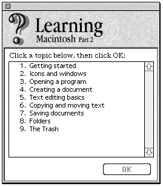

A positive user experience means getting the task done with a minimum of hassle. But
as applications engage in the features race, their complexity increases as well, leading
to increased user frustration. One solution is to add a powerful help system that can
guide the user through a task. The new Apple Guide system makes this chore easier
than you might think.
Someone has decided that your application needs help. Maybe it's a little heavy on the
features, and Marketing is afraid that the user will be overwhelmed. Perhaps your
user studies have shown that users can really benefit from some coaching when
learning your interface. Or the finance experts have figured out that you can save a lot
of money on printing and user support costs by putting help on the screen rather than
in printed manuals. And yesterday the CEO declared that your product must win a gold
medal in customer satisfaction.
It can be done.
This article tells you how to add Apple Guide, a new kind of help system, to your
application with a pain and suffering level that you can control, ranging from almost
nothing to only a tingle.
The article doesn't tell you what help your application should provide; that's up to
your software designer, technical writer, instructional designer, interface designer,
and whoever else likes to stir the design pot. Once you've decided what help you want
and the technical writer has written it using the Apple Guide authoring tool, you
integrate it. That's where this article -- and this issue's CD, which contains a sample
program with Apple Guide integrated -- comes in.
Apple Guide is a new kind of help system that acts as an interactive, task-oriented
guide and will be available to all applications systemwide as of System 7.5. Apple
Guideis based on more than two years of research on people's need for help while
usingtheir computers. Several key findings of this research underlie the Apple Guide
design:
The paradigm is simple:
Traditional help requires users to go to a printed or on-screen document to identify
the problem in the context of the documentation. This in itself can become a
frustration. Users would rather have someone (or something) guide them through the
obstacle. That's what Apple Guide does: it acts as an interactive, task-oriented guide.
When users ask for help, the first thing they see is theaccess window , which provides
three ways of selecting the help topic. Once the user selects the help topic, the access
window is replaced by thepresentation window , which presents the help topic as a
series of panels containing text, graphics, QuickTime movies, and controls. (Note that
in an application in which Apple Guide has been fully integrated, the help topic can be
preselected for the user based on context -- more on this later.) To experience Apple
Guide for yourself, try out the application called MoGuide on this issue's CD.
Apple Guide is implemented as a system extension (see "What Systemwide Help Means"
for some ramifications of this) that uses a guide database file to drive its interaction
with the user, as depicted in Figure 1. The database file, written using the Apple Guide
authoring tool, contains multimedia help content and instructions on how to interact
with the user. The delivery engine is in the system extension, which contains two
components: a stay-resident portion and a launch-as-needed application portion. With
a RAM footprint of less than 20K, the stay-resident portion installs patches at startup
time, manages the Help menu (the one labeled with a question mark in a balloon), and
starts up Apple Guide from the Help menu. The applicationportion is loaded and run
when help is being delivered; with a RAM footprint of 400K,it's launched as a faceless
background application in its own heap. The Apple Guide system extension and several
guide databases will be provided as part of System 7.5.
Figure 1. How Apple Guide works
You can put Apple Guide to work for you whether or not you decide to integrate it into
your application. However, as in life, the level of pain you choose determines the
amount of gain.
The easiest way to add Apple Guide to an application is to place an Apple Guide database
file in the same folder as the application. No coding changes are necessary; the
integration is automatic. The Apple Guide extension adds the database to the
application's Help menu and launches the database when the user chooses it.
Here's what Apple Guide delivers without any changes to your application:
This is a lot of help in itself. But if you want more control over Apple Guide, you'll
need to make code changes in your application. Here's what those changes can add:
If you want the gain and you're ready for the (slight) pain, read on.
To communicate with Apple Guide from your application, you use standard, trap-based
function calls. The function calls enable your application to get information about
Apple Guide, start up Apple Guide, respond to Apple Guide, modify help content, and
quit Apple Guide. I'll explain how to do each of these in the sections that follow. You
might want to examine the source code for the sample program MoGuide on this issue's
CD to see the function calls used in context. Then you can try integrating Apple Guide
into your own application.
Your application can find out a number of different things about Apple Guide: whether
it's installed, what its status is, whether an Apple Guide database is available, the
number and characteristics of guide databases available, and whether your own guide
database is open.
IS APPLE GUIDE INSTALLED?
Before you do anything with the Apple Guide extension, you need to determine whether
it's installed. The following code shows how:
long result=0;
OSErr err = Gestalt(gestaltHelpMgrAttr, &result);
if (err==noErr && (result & (1 << gestaltAppleGuidePresent)))
; // Apple Guide is available.
else
; // Apple Guide is not available.
WHAT'S THE STATUS OF APPLE GUIDE?
Once you've determined that Apple Guide is installed, you can get more information
about its state -- for example, is it active (displaying a help window)? If it is, which
help window is being displayed? The latter information can be saved and used to
restart users at the point where they left the help system.
The AGGetStatus function returns whether Apple Guide is active (kAGIsActive),
sleeping (kAGIsSleeping), or not running (kAGIsNotRunning). In the active state, help
is being provided (a guide database is open). In the sleeping state, the Apple Guide
background application is loaded and running, but no help is being provided (no guide
database is open). In the not-running state, the application portion of Apple Guide isn't
loaded or running.
If Apple Guide is active, you can further determine whether the access window or the
presentation window is showing. For example:
if (AGGetActiveWindowKind()==kAGAccessWindow)
;// Apple Guide access window is showing.
else if (AGGetActiveWindowKind()==kAGPresentationWindow)
;// Apple Guide presentation (topic) window is showing.
else
;// No window is showing; Apple Guide is sleeping or not running.
Be sure you've determined that Apple Guide is installed before invoking AGGetStatus or
any other Apple Guide function. Otherwise, if Apple Guide isn't present, you'll get an
unimplemented trap error.
IS AN APPLE GUIDE DATABASE AVAILABLE?
You can find out whether an Apple Guide database is available to the current
(frontmost) application, and furthermore, whether a specific type of guide database is
available. (There are two file types and five database types, classified according to the
type of help information they contain; see "About Apple Guide Database Files" for a
rundown of the types.)
The AGGetAvailableDBTypes function returns bits set to correspond to the various
types of guide databases available to (in the same folder as) the frontmost application.
enum AGDBTypeBit // To test against AGGetAvailableDBTypes
{
kAGDBTypeBitAny = 0x00000001,
kAGDBTypeBitHelp = 0x00000002,
kAGDBTypeBitTutorial = 0x00000004,
kAGDBTypeBitShortcuts = 0x00000008,
kAGDBTypeBitAbout = 0x00000010,
kAGDBTypeBitOther = 0x00000080
};
The kAGDBTypeBitAny bit will be true if the application has any Apple Guide database
file available. Thus, the following statement will test whether any guide database is
available:
if (AGGetAvailableDBTypes() & kAGDBTypeBitAny)
; // Some kind of database is available
You can simlarly use the other constants to test the availability of specific types of
Apple Guide databases.
HOW MANY AND WHICH GUIDE DATABASES ARE AVAILABLE?
The tests described in the preceding section apply only to guide database files or their
aliases in the same folder as the application. You can also find files outside the
application's folder, by using the AGFile library that's included on this issue's CD. This
library doesn't use or require the Apple Guide system extension and offers access to
information about Apple Guide database files. With the AGFile library, you can count
and find guide databases of specific file and database types. Once you've found a
database, you can get information about it. For example, the following code counts the
number of main guide database files (those that aren't mix-in files) of type
kAGFileDBTypeHelp in a specified volume and directory:
AGFileCountTypeguideFileCount; AGFileDBType databaseType=kAGFileDBTypeHelp; Boolean wantMixin=false;
guideFileCount = AGFileGetDBCount(vRefNum, dirID, databaseType,
wantMixin);
You can get the FSSpec for a particular type of Apple Guide database file in a specified
volume and directory as follows:
AGFileCountTypeguideFileCount; AGFileDBType databaseType=kAGFileDBTypeOther; Boolean wantMixin=false; short dbIndex=1; FSSpec dbSpec;
err = AGFileGetIndDB(vRefNum, dirID, databaseType, wantMixin,
dbIndex, &dbSpec);
The AGFileGetIndDB call will return noErr and the FSSpec for the database file if it's
present. Increment dbIndex to find additional guide databases of the same type.
Listing 1 shows how to accumulate a list of FSSpecs for all the guide databases in a
specified volume and directory.
Listing 1. Accumulating FSSpecs for guide databases
AGFileCountType guideFileCount;
AGFileDBType databaseType=kAGFileDBTypeAny;
Boolean wantMixin=false;
FSSpec dbSpec;
Handle hFileList;
// See how many guide files are available.
guideFileCount = AGFileGetDBCount(vRefNum, dirID, databaseType,
wantMixin);
if (guideFileCount>0) {
// Create a new list of file FSSpecs.
hFileList = NewHandle(guideFileCount * sizeof(FSSpec));
if (hFileList!=nil) {
// Get each file and add to list.
for (short i=1; i<=guideFileCount; i++) {
if (AGFileGetIndDB(vRefNum, dirID, databaseType,
wantMixin, i, &dbSpec)==noErr) {
((FSSpec*)(*hFileList))[i-1] = dbSpec;
} // if (...
} // for (short...
} // if (hFileList...
Listing 1. Accumulating FSSpecs for guide databases
Once you have the FSSpec for a database file, you can ask for more information. For
example, the following code can be used to get the version and menu item name for a
database:
AGFileMajorRevType majorRev; AGFileMinorRevType minorRev; Str255 menuName; AGFileGetDBVersion(&fileSpec, &majorRev, &minorRev); AGFileGetDBMenuName(&fileSpec, menuName);
IS YOUR GUIDE DATABASE OPEN?
As mentioned earlier in "What Systemwide Help Means," you can't assume your guide
database is always open, even if the user invoked it from within your application. To
cope with this fact of life, your application should call the AGIsDatabaseOpen function
when it's switched from background to foreground, passing in the database's reference
number, to see if its guide database is still open.
if (AGIsDatabaseOpen(myAGRefNum))
; // The database with myAGRefNum is open.
else
; // The database with myAGRefNum isn't open; someone else
closed it.
If AGIsDatabaseOpen is true, you can also assume that Apple Guide is active. If
AGIsDatabaseOpen is false and you haven't explicitly closed your database, another
application or the user has closed it.
STARTING UP APPLE GUIDE
You can start up Apple Guide with either the first available guide database or one you
specify. You can also control the initial view the user sees, choosing from seven
different options. In this initial view you can present the user with a list of topics
related to the context, or you can skip the initial view and instead take the user
directly to a help topic.
DEFAULT STARTUP
The default startup, the quickest and easiest way to start up Apple Guide, opens the
first available guide database. The database must be in the same folder as your
application (the Finder is an exception -- its guide databases are in the Extensions
folder). The mechanism is similar to what happens when the user selects an item from
the Help menu.
The default startup is accomplished by calling the AGOpen function with the kAGDefault
flag:
err = AGOpen(kAGDefault, 0, nil, &myAGRefNum);
A reference for the database that was opened is returned in myAGRefNum. You must use
this reference when you close the database.
Apple Guide starts up with the frontmost application's guide database and the startup
conditions specified in the database. If more than one Apple Guide database is available
for the application, the first database of type kAGFileDBTypeHelp is used. If no
database is present, the error code kAGErrDatabaseNotAvailable is returned and Apple
Guide doesn't start up.
DATABASE OTHER THAN THE DEFAULT
An application can also open a specific guide database when it starts up Apple Guide, by
specifying the FSSpec for the database in the AGOpen call:
err = AGOpen(&myGuideDatabaseFSSpec, 0, nil, &myAGRefNum);
See the earlier section "How Many and Which Guide Databases Are Available?" for a
suggested way to get a database FSSpec.
VIEW OTHER THAN THE DEFAULT
Apple Guide offers seven startup view options. This is normally controlled by the guide
database; however, these defaults can be overridden with a startup function parameter.
For example:
err = AGOpenWithView(&myGuideDatabaseFSSpec, 0, nil, kAGViewIndex,
&myAGRefNum);
Six of the possible startup views are listed below. These views, which are access
windows, are shown in Figure 3. Startup view number 7 is the topic or presentation
window view, which is started with a different function call (described below in
"Going Directly to a Topic").
enum
{
kAGViewFullHowdy = 1, // Full-window howdy
kAGViewTopicAreas = 2, // Full-window topic areas
kAGViewIndex = 3, // Full-window index terms
kAGViewLookFor = 4, // Full-window look-for (search)
kAGViewSingleHowdy = 5, // Single-list howdy
kAGViewSingleTopics = 6 // Single-list topics
};
Since almost all guide databases contain multiple topic areas, they usually start up
with the kAGViewFullHowdy view. If you specify a kAGViewSingleHowdy or
kAGViewSingleTopics view for these kinds of guide databases, only the topics for the
first topic area will be shown.
View 1: Full-window howdy
View 2: Full-window topic areas
View 3: Full-window index terms
View 4: Full-window look-for
View 5: Single-list howdy

View 6: Single-list topics
Figure 3. Six startup view options
PRIMING A SEARCH
An application can start up Apple Guide (or restart it if it's already running) in the
look-for view with a list of context-sensitive topics that match a search string (a
Str255). To initiate a context-sensitive search, use the AGOpenWithSearch function
and include a look-for search string as follows:
err = AGOpenWithSearch(&myGuideDatabaseFSSpec, 0, nil,
mySearchString, &myAGRefNum);
GOING DIRECTLY TO A TOPIC
Sometimes you may want to initiate help when the user clicks a Help button in a dialog
or Option- clicks an interface object. In these cases, you have a good idea of the context
and can bypass the Apple Guide access window, going directly to the presentation
window with the selected help topic. Here's how:
err = AGOpenWithTopic(&myGuideDatabaseFSSpec, 0, nil, myTopicId,
&myAGRefNum);
The presentation window will appear with the first panel of the topic.
The Apple Guide authoring tool usually handles topics by name and quietly assigns a
topic ID number when the database is compiled. However, you can override this
automatic assignment by specifying your own topic ID. See the authoring tool
documentation for information on how to assign your own topic ID numbers.
Figure 4. Controls in a presentation window
The author of an Apple Guide database file can initiate a number of different kinds of
events to which your application may need to respond. These include attaching Apple
events to controls in help topics, drawing coach marks on dynamic interface objects,
sending Apple events when certain panels appear, and using context checks to
determine whether a presentation panel should be shown or skipped.
RECEIVING THE AUTHOR'S EVENTS
A help author can attach an Apple event to any control in an Apple Guide presentation
window. The controls can be Macintosh buttons, checkboxes, radio buttons, or Apple
Guide buttons (the last two types of controls are illustrated in Figure 4). The author's
action specification for these controls will contain
The action might be directed to Apple Guide -- for instance, to start up another
presentation window, to return to the access window, or to go to another panel in the
same topic. The action can also be directed to your application; in that case, the target
is your application signature, and the Apple event class and event ID are ones for
which you've installed a handler. The content of the optional key/data field can be
anything; how it's used is up to the application developer. Apple Guide extracts the
optional data field, calculates its size in bytes, calls AEPutParamPtr with a descriptor
type of typeChar, and sends the Apple event. To receive the action, install an Apple
event handler for the class and event ID. Your handler can get the optional data
parameter using your key.
There is no reply to this event. If you want to reply, see the section "Responding to
Context Checks."
PROVIDING OBJECT LOCATION FOR COACH MARKS
Coach marks are circles, X's, underlines, and arrows that can be drawn on interface
objects to direct the user's attention to them, as illustrated in Figure 5. Using such
marks has been shown in tests to be much more effective than putting drawings of the
objects into the help content (users tend to click on the drawing, not the real thing).
The Apple Guide authoring tool provides a fairly complete set of instructions to mark
many common interface objects, such as the following:
Figure 5. Coach marks
These are all relatively static elements with locations that can be found by Apple
Guide's marking facility. Some interface objects, on the other hand, are dynamically
located at locations known only to the application. If you've identified a dynamic
interface object using the Object Support Library (OSL), you can use Apple Guide's
built-in OSL coach-marking facility to locate and mark the object. See the
documentation for the Apple Guide authoring tool for details.
If you want to mark dynamic interface objects and you're not using the OSL, Apple
Guide provides another method for you to use. In this method a handler installed by
Apple Guide calls your application asking for the rectangle of a named object. To use
this method, your application must install a coach handler that takes the object name
and replies with the object rectangle in global coordinates. Here's an example. First,
you install the coach handler:
AGCoachRefNum myAGCoachRefNum;
OSErr err = AGInstallCoachHandler(MyCoachReplyProc, myRefCon,
&myAGCoachRefNum);
The prototype for a CoachReplyProc is as follows:
typedef pascal OSErr (*CoachReplyProcPtr) (Rect* pRect, Ptr name,
long refCon);
Apple Guide will invoke your CoachReplyProc with the name (a null-terminated
C-string) and myRefCon from the AGInstallCoachHandler call. Set the value of pRect to
the object rectangle in global coordinates. The following is an example of a
CoachReplyProc. Apple Guide will draw the coach mark around, under, or through the
rectangle provided in the reply.
pascal OSErr MyCoachReplyProc(Rect* pRect, Ptr name, long refCon)
{
// Look up the name and return the rect in global coordinates.
OSErr err = MyRectForName(pRect, name);
return err;
}
Coach handlers persist across the opening and closing of guide databases. However, you
must remove the coach handler when your application quits. Use the AGCoachRefNum
that was returned to you in the AGInstallCoachHandler call.
OSErr err = AGRemoveCoachHandler(&myAGCoachRefNum);
RESPONDING TO THE USER'S HELP FOCUS
You can get Apple Guide to notify your application whenever a particular panel is being
displayed (in other words, whenever it's the user's help focus) by taking advantage of
Apple Guide's authorable actions. To do this, use the authoring tool to attach an Apple
event of your choosing to an "On Panel Show" or "On Panel Hide" action. When the panel
is shown or goes away, the Apple event is sent to your application, which can then
respond appropriately. For example, it might be useful to attach an Apple event to an
"On Panel Show" action for the last panel in a series of instructions, to signal that the
user has reached the end. See the authoring tool documentation for information on how
to attach an Apple event to a panel action.
RESPONDING TO CONTEXT CHECKS
Apple Guide can use context checks to get information about the user's environment
and, based on that, to decide which panels to show in a presentation window. This
enables the Apple Guide author to tailor the help to the user's current context. It gives
an individualized feel to the instruction and avoids requiring the user to navigate
through irrelevant information, things that users appreciate a lot. When you integrate
Apple Guide, the user's context will usually be your application. The help author will
want to use information from your application to determine what help the user needs.
You'll need to respond to these context checks by installing an Apple event handler,
processing the context check, and returning true or false.
Here's how it works: An author attaches conditions to selected panels. These conditions
can be based on context checks or on user controls in other panels. While the user is
reading the content of a presentation window, Apple Guide looks ahead to see which
panel to show next. It evaluates the conditions, including context checks, attached to
each panel. When Apple Guide evaluates a context check, it invokes the Apple event
handler for the context check. The results of the evaluation based on the context check
determine whether the panel should be shown or skipped.
Context checks are usually encapsulated as Apple Guide "external modules" andattached
to a database. An external module is a code resource that executes inresponse to the
query from Apple Guide. Creating and using external modules is outside the scope of
this article, but see theTContext::ReplyToContext function in the sample code for an
example of how to handle context checks from within your application.
Apple Guide handles context-check queries similarly to coach-mark queries. You
install a context- check handler and Apple Guide calls it. First, the installation of the
handler:
AGContextRefNum myAGContextRefNum;
OSErr err = AGInstallContextHandler(MyContextReplyProc, eventID,
myRefCon,
&myAGContextRefNum);
The prototype for a ContextReplyProc is as follows:
typedef pascal OSErr (*ContextReplyProcPtr)(Ptr pInputData,
Size inputDataSize, AEEventID eventId,
Ptr *ppOutputData, Size *pOutputDataSize,
long refCon);
When Apple Guide needs to do a context check, it invokes your callback with the
context-check inputData and eventId. It also passes the refCon that you provided in the
AGInstallContextHandler call. The ContextReplyProc should use NewPtr to create a
storage area for a short, set *ppOutputData to the value of the pointer, and set
*pOutputDataSize to sizeof(short). Always return a pointer to a short. Apple Guide
will dispose of the pointer.
You're probably wondering why we didn't pass a Boolean instead of *ppOutputData and
*pOutputDataSize. The reason is that the context reply is a special case of a more
general reply mechanism, which I'm not going to go into here. Just take my word for it
-- it has to be this way.
Context handlers persist across the opening and closing of help databases. However,
you must remove the context handler when your application quits. Use the
AGContextRefNum that was returned to you in the AGInstallContextHandler call.
OSErr err = AGRemoveContextHandler(&myAGContextRefNum);
If you just want to field Apple events that don't require a reply, see the earlier section
"Receiving the Author's Events."
So far, we've talked only about main guide database files, the standalone files that
support all or part of an application. You can modify the content of a main guide
database by mixing in a mix-in guide database.
When a field upgrade involves new features and you don't want to release a revised
guide database, you can use Apple Guide's mix-in files to add help content to the main
guide database file. The mix- in files don't appear in the Help menu. When Apple Guide
starts up, each mix-in file is merged with a main guide database file of the
corresponding DBType. Multiple mix-in files can be mixed in.
The process is automatic, but the guide database author can control it by using Gestalt
selectors. Each guide database file contains three Gestalt selectors. The selectors must
evaluate to true in order for a main database to appear in the Help menu or a mix-in
database to be mixed in. The Gestalt selectors in a given file are combined using
Boolean OR logic. Empty Gestalt selectors are ignored. If all Gestalt selectors are
empty, the file is unconditionally accepted.
There's a really cool way for the programmer to handle this. If the first Gestalt
selector is the literal 'QLfy', Apple Guide will call a code resource of type 'QLfy' in the
database file. If the code resource returns true, the database file will be mixed in; if it
returns false, it won't be. The prototype for the code resource is as follows:
short(*QualifyFuncType)(void);
The AGFile library described earlier provides accessor functions that you can use to
get the selectors and their values from any database. Only the authoring tool can change
the selectors, however.
When you've finished using a guide database, use the AGClose function with a pointer to
the AGRefNum for the database.
err = AGClose(&myAGRefNum);
This will close the database and leave Apple Guide running in the background. When
you've finished with Apple Guide, use the AGQuit function.
err = AGQuit();
This will make Apple Guide quit. If you attempt to call AGQuit without first closing the
database, you'll get a kAGErrDatabaseOpen error.
If you start Apple Guide from your application, you should make it quit. Otherwise, the
Apple Guide background application and help window will hang around without your
application and consume system resources. This persistence is a result of the fact that
Apple Guide is available systemwide. Even if the user quits Apple Guide by clicking
the Cancel button or the close box, you must still balance every AGOpen function with
an AGClose.
Now you know what's involved in integrating Apple Guide into your application. If
you're starting with a new product, you can build the use of Apple Guide into its design
from the beginning; this can provide you with a competitive edge. If you're revising an
existing product, you can add Apple Guide as a key feature. In either case, the
instructional designer or technical writer should work closely with the software
engineers to include an interactive task-oriented guide as an integral part of the
design. Here's a suggested plan for doing that: 1. The instructional designer prepares
a specification for how the application, Apple Guide, and the paper documentation will
work together. The specification should include a description of the information that
the guide database needs from the application and vice versa -- for example, how help
is started, Apple events, context checks, and coach-mark locations. 2. The software
engineers use the instructional designer's specification to add the necessary Apple
Guide features to the application. 3. The instructional designer authors the database.
4. The use of the guide database is included in the application's test suite.
It's up to you and your database author to assemble Apple Guide's features into useful
and coherent help for your user. This section gives some suggestions for making Apple
Guide as helpful as it can be.
MULTIPLE DATABASE FILES
You should provide different guide database files for different needs. Apple Guide
database possibilities include the following:
HELP EVERYWHERE YOU NEED IT
Your user should have access to help under all conditions. Here are some possibilities:
CONTEXT SENSITIVITY
You, too, can use the buzzword "context sensitive." Use the Apple Guide features to
provide "smart" help -- help that's tailored to the user's current context:
INTERACTIVITY
The built-in features of Apple Guide provide a high degree of interactivity. You can
provide even more with integration:
This article has covered the basics of how your application can integrate Apple Guide.
There's more in the complete API, but you have enough here to get started. With or
without integration, the help system is there to serve your user. It shouldn't be
compensation for bad interface design, nor should you add it just to save money on
manuals or user support. Help is there to make your user moreproductive with your
product, leading to a positive user experience, lots of recommendations, and sales,
sales, sales.
It can be done.
Because it's implemented as a system extension, Apple Guide is available to all
applications systemwide. It's designed to help users within and across application
boundaries. Apple Guide can guide a user through multiple applications including, but
not limited to, the application that invoked it.
Apple Guide's systemwide nature has ramifications for everything you do with it.
While it enables delivering an unprecedented level of help to users, it also presents
certain programming challenges. Consider the following characteristics of systemwide
help and what they mean to you as a developer.
Help works across multiple applications. Your application's guide database can
guide a user through multiple applications, not just your own. You can provide help
for tasks that involve system-level operations and the use of other applications.
One ramification of this is that if the user switches from your application to another
one after starting up Apple Guide and without quitting your application or Apple Guide,
Apple Guide will still be present and showing your guide database. This may be
desirable, depending on what help you're providing. If not, the user can quit Apple
Guide from the help window. Don't force Apple Guide to quit when your application goes
to the background.
Help is always available to the user. Your application can always invoke Apple
Guide, even if it's in use by another application. That application's guide database will
be closed and yours will be opened and shown instead.
This works the other way around as well -- if the user invokes Apple Guide from the
Help menu within another application while yours is open in the background, your
guide database will be closed and the other application's will be opened and shown
instead. Moreover, the other application can still make Apple Guide quit even if you
closed its guide database to show your own.
The bottom line for you is that you can't assume that your guide database is always
open, even if the user invoked it from within your application. A call for dealing with
this is described later, under "Is Your Guide Database Open?"
The user is always in control. Users can quit Apple Guide at any time, even if
they've switched from the application that started it up. Once again, this means that
you can't assume your guide database is always open, even if the user invoked it from
within your application.
Apple Guide database files provide the content of the help that your application gives
users. These files can be of the following two types:
Files of both types have a creator of kAGCreator, which is 'reno', and are further
subdivided by database type according to the type of help information they contain. The
database type is stored as part of the database content and determines where the file is
represented in the Help menu, as indicated in Figure 2.
Apple Guide supports multiple guide database files but only one of each type, except for
kAGFileDBTypeOther. You can have multiple kAGFileDBTypeOther files; they're added
at the end of the Help menu, ordered by filename.
All Apple Guide database files located in the same folder as your application will be
represented in the Help menu. (Note that aliases will work as well as database files
themselves, but that folders nested within your application's folder will not be
searched.)
If you don't want a guide database represented in the Help menu, you should separate
the guide database from the application. In this case, you must provide a mechanism in
your application to start up Apple Guide with that database, since the user can't do it
from the Help menu. The section "Starting Up Apple Guide" tells all about this.
Databases can also have your creator and type, allowing you to use your own document
icons. Databases identified this way won't show up on the Help menu and must be
opened from your application.
Figure 2. Menu items identified by database type
JOHN POWERS (AppleLink JOHNPOWERS), MWM, Apple employee, seeks intense
relationship with software. Enjoys object-oriented design, craftsmanship, classical
music, long walks, quiet moments, laser discs with popcorn, travel, engaging novels,
and kinky polymorphism. Software must be willing to share time with extended
family. Documentation a must. *
The Apple Guide Developer's Kit will soon be available from APDA (if it isn't
already). It contains everything you need to author databases and integrate Apple Guide.
Included in this kit is an authoring tool that compiles help content written with a
standard word processor into an Apple Guide database file. The kit also contains sample
help content files and documentation. *
Thanks to our technical reviewers Peter Commons, Winston Hendrickson, Josh
Jacobs, Dave Lucky, Dave Lyons, and Eric Soldan.